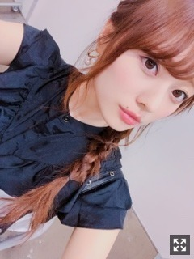
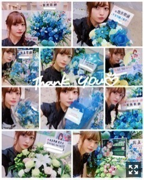
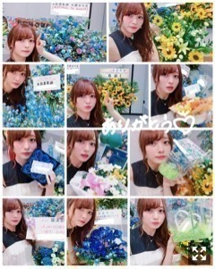
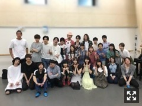

七つの大罪と握手会とライブと告知と、、
みなさまこんにちは！
乃木坂46 ３期生の
梅澤美波です！！

最近自撮り全然してないや〜( .. )
皆様いかがお過ごしですか？
最近毎日暑いですね〜
夏バテしてない？( .. )
夏が苦手な私は
毎日へとへとだよ〜∠( ˙-˙ )／
日焼け止めきらいだけど
頑張って塗ってる( .. )
白くなりたい、、
今日はまず、遅くなってしまった
握手会のことを！！
６／１７ 個別握手会！
夢メッセみやぎにお越しくださった皆様
ありがとうございました！
この日は前日と翌日に
セラミュ本番があったため
って方がたくさんいて
とても嬉しかったよ〜！！(；；)

その日のお花たち！
とってもかわいい〜！(；＿；)
ありがとう！！
そして６／２３ 個別握手会！
東京ビッグサイトにお越しくださった皆様
ありがとうございました！
この日はなんとね
TeamSTARで
お揃いTシャツ着たよ〜！！
最近はSTARのみんなと現場が一緒だと
集まっちゃう！（笑）
すきすぎるんだよなあ(；＿；)
そしてこの日のお花

たくさんありがとう(；＿；)
セーラームーンに関するお花が
多かったかな☺︎♪
いつも本当にありがとうございます！
次の個別握手会は
７／１６！！
浴衣着ようかな〜なんて
おもてます∠( ˙-˙ )／
そして２１枚目シングルの
個別握手会申し込みもありました！
追加会場以外は
なんと2次で完売みたいで、、
ありがとうね本当に(；＿；)
楽しもうぜっ
１０月はハロウィンだし
コスプレしようかな〜
なんておもてます∠( ˙-˙ )／（笑）
何みたい〜？
まだ全然決めてないや〜
今回のシングルは
追加会場含め４会場しか参加できませんが、、(；＿；)
追加会場は
明日から申し込みがはじまります！
今の私に会えるのは今だけなので、
ぜひ、会いに来てねっ
そしてそして
３日間完走しました〜！ぱちぱち
いや〜ほんとに
どうなることかと思いましたが
すっごく楽しかった！
セラミュー期間でもあり
色んなこととリハーサルが被り
リハに参加出来ないことが
ほとんどだったので不安で不安で、、
みんなに支えてもらいながら
なんとか無事終えることが出来ました！
自分の容量の悪さに腹が立ったり
自分を見直す機会でもあったかなあと。
ダメ人間だなって思うことが増えた！
なので見直します！うん！
たくさんのタオルやサイリウム
ありがとうございました！
見つけた方には
ほとんど何かしらしたつもりだよっ
届いたかしら∠( ˙-˙ )／
たくさんたくさんタオルが見えて
本当に嬉しくって楽しくって仕方なかった！
神宮にいた方にも秩父宮にいた方にも
楽しんでいただけてたら嬉しいなあ。
雨降ったけど
雨に濡れるのも悪くない！
気持ちよかった！！
この年になると雨をあんなに被ることも
中々ないからなあ( .. )
これも野外の良さかなあと◎
そして
すごくすごく寂しいけど
ステージの上でキラキラ輝くお2人を見て
私ももっともっと頑張らなきゃ！って
思いました。
セラミューがあり
お2人と一緒のステージに立てて
近くでパフォーマンスができて
本当に嬉しかった！！
ご卒業されるその日まで
思い出が作れたらいいなあ(；＿；)
お知らせ◎
▽７／２４ B.L.T. さま
れんかとももことの撮影でした！久しぶりにわちゃわちゃできた撮影だったなあ〜とても楽しかった！！ぜひチェックしてください！
▽７／２６ 週刊少年チャンピオン さま
なんと！初ソロ表紙を努めさせていただきました！この間撮影してきました！とってもとっても楽しかったなあ。夏を満喫しました！夏にやりたいこと一通りできた撮影って感じ！スタッフさんもとにかく優しくてうきうきな撮影でした☺︎セラミュもあったりで中々撮影出来ずだったので、１人での撮影はかなり久しぶりだったなあ〜☺︎
▽OVERTURE さま
発売中！
▽連載中の日経エンタテイメント！さま
発売中です！
セラミュのことなど！！
▽モデルプレスさんにて
私のソロインタビューの記事を
書いてくださっています！！
結構色んなことを包み隠さずお話したので
ぜひ読んでみてね！！
告知が追いつかなかったものもあったりで
すみません(；＿；)
できるだけモバメでもなんでも
お知らせできるようにします！！
「七つの大罪 The STAGE」
只今絶賛稽古中です！！
ついに始動です！
勉強の毎日です。
初めて経験することも多く
戸惑いもありますが
想像力を働かせながら稽古する毎日です！
ただでさえまだまだなのに、、
人一倍、誰よりも頑張らないといけない！
不安になることもありますが
周りの皆さんの優しさに
毎日救われてばかりです、、
常に背中を支えてくれる
とても暖かく明るい現場です！
お芝居に対する姿勢や
舞台上でのキャストの皆さんの姿が
本当に素敵で刺激を受けてばかりです。
この作品に参加出来て幸せ！
まだ始まったばかりだけど
もうそう感じています。

楽しみです！！
色んなことを教わりながら
助けてもらいつつ
この作品に花を添えられるように頑張ります！
そして７／１４の音楽の日に
出演させて頂きます！
ぜひみてね！
それではまた更新します！
めがね
西日本の豪雨被害状況を観て
とても胸が痛みます。
一日でも早い復興と、
亡くなられた方のご冥福をお祈り申し上げます。
Original：https://www.nogizaka46.com/s/n46/diary/detail/45938?ima=4952&cd=MEMBER